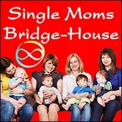
Single Moms
Bridge-House
- …
Single Moms
Bridge-House
- …
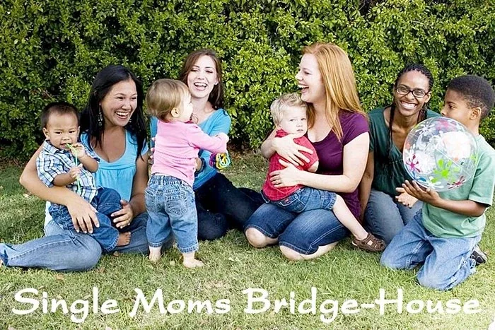
- # Together we are inhabiting a new part of next culture, inventing it the way we want it: in- Archearchy (archived — not captured).- # Our Bright Principles are:- # ALIVENESS INTEGRITY- # CONNECTION- # EVOLUTION- # You are invited to participate! - A SAFE SPACE FOR CHIlDREN'S CULTURE - Bridge House- What Is A 'Bridge-House'?- A Bridge-House is a - rapid-learning- culture-shiftenvironment open to anyone who is participating in- Possibilitator Training.- The clarity that Bridge-House participants are - Possibilitatorson an authentic evolutionary- Pathinsures that each Bridge House is contexted in:- Authentic Adulthoodwith aTransformed Gremlinand aDecontaminated Adult Ego State (archived — not captured). - Ongoing 3 Phase HealingandInitiatoryProcesses. - Emotional Healing Processes. - Radical Responsibility. - High Drama. - Upgraded Thoughtware. - Archearchy (archived — not captured). - Torus Meeting Technologies(e.g. The Purple Card, Frying Pan, Wok, M.E.S.S., Wisdom Counsel, etc.). - and the Study Groups,Possibility Teams,Rage Clubs,Trainings,Tools,Thoughtmaps,Distinctions,S.P.A.R.K. Experiments, andProcessesofPossibility Management. - Each Bridge-House serves the world as an actual 'bridge' that leads from the - Thoughtwareedges of the modern- capitalist patriarchal empire, over the gap of the unknown, into regenerative and transformational life in next culture -- archearchy (archived — not captured)- the culture that is naturally emerging since- matriarchy and patriarchyhave run their course.- Every aspect of modern life as we have come to know it is unregenerative. Modern culture is not broken. It is doing its job perfectly, burning fossil fuels and monetizing nature. Since modern culture is not broken, it cannot be fixed. - " - You don't change things by fighting against the existing gameworlds. You change things by building and inhabiting new regenerative gameworlds that make the existing gameworlds irrelevant. Don't be left behind playing in a stupid gameworld." - as R. Buckminster Fuller might have said were he still alive today- The known world is in a state of radical flux. It is groundless, and baseless, because modern culture is exterminating life on Earth at the fastest possible rate. Anyone who follows the Rule Of Law of modern culture must be criminally insane. Anyone who enforces the Rule Of Law of modern culture has already forfeited their life. - All known procedures are in question... commerce, education, health, government, military, religion, food production, lifestyle, transportation, clothing... but what are the answers? They too are unknown. This means that each Bridge-House is, by necessity, a research center, sharing the findings from their experiments with other Bridge-Houses around the world. - SPECIALTIES OF SINGLE MOMS BRIDGE-HOUSE- Every Bridge-House is unique due to its geographical location, projects specialties, - Nonmaterial Valueprovided such as- Initiationsand- Healings, and the Spaceholders. Yet each Bridge-House has the common objective of building-up your next culture- Specialtyknacks to become a Spaceholders for creating new Bridge-Houses.- Single Moms Bridge-Houseis blessed with numerous good fortunes:- Shared collaborative SpaceholdingforArchiarchy Children's Culture (archived — not captured). - Shared Nonmaterial Valueincome generation withArchiarchy Economics (archived — not captured), enough to pay for food, rent, and utilities for everyone so that participants can quit theircorporate jobs. - Artabana Health Care Cooperative, in the style of- Archiarchy Artabana. - Located in a safe rural area with four distinct seasons, yet mild winters and summers. - Permaculture fruit and vegetable gardens with room for expansion. - Most importantly, we want to liberate your true questions, the inner motivation driving you to develop and offer your piece of the great puzzle: how we humans can live in a global meshwork of regenerative - Archiarchycultures on planet Earth together.- SINGLE MOMS BRIDGE-HOUSE CODEX- Single Moms Bridge-House is a - Gaian Gameworld.- A - gameworld's Context, Rules Of Engagement, Purpose,- Bright Principles, etc. are documented in a working draft of a Codex.- A Codex is not rules... It' more like 'guidelines', and is always evolving. - The Codex explains the - Purpose, how things go, how you enter the gameworld, and how you leave it. Never a finished document, and never at the center of the gameworld, nonetheless the Codex is a crucial reference document that is available to the general public. - Authentic - Single Moms Bridge-HouseTeam- Here we go! - ### Habet Dahab Ogbamichaeland Someya- going on adventures together - on the edges of Modern Cultures - Elements Of Single Moms Bridge-House Context- #### Together we build our capacity for adulthood connection and collaboration in archearchy. - ### WHAT WE ARE- NOT!- We are NOT a 'social services home' for rescuing homeless penniless single moms. - We are NOT a convenient 'babysitter' or 'day care center' for your child. - We are NOT a 'single moms support group' of caretakers and - Child-Egostatevictims.- We are NOT a 'hippy drop-in joint' where you can be 'free' and 'do whatever you want'. - We are NOT a source of - Low Dramafor feeding your- Gremlincontaminated- Adult Ego State.- At Single Moms Bridge-House we - Holdand- NavigateSpace for a specific- Context.- Holding a specific Context is on - Purpose: we want to create a specific- Result, namely: a- Bridge-House, where people relocate their- Point Of Originto archearchy, and train-up to build the next- Bridge-House.- For most people it is equally as helpful to know what we are NOT as it is to know what we ARE. - Clarity is - Clarity.
- ### WHAT WE ARE- NOT!- We are NOT a 'social services home' for rescuing homeless penniless single moms. - We are NOT a convenient 'babysitter' or 'day care center' for your child. - We are NOT a 'single moms support group' of caretakers and - Child-Egostatevictims.- We are NOT a 'hippy drop-in joint' where you can be 'free' and 'do whatever you want'. - We are NOT a source of - Low Dramafor feeding your- Gremlincontaminated- Adult Ego State.- At Single Moms Bridge-House we - Holdand- NavigateSpace for a specific- Context.- Holding a specific Context is on - Purpose: we want to create a specific- Result, namely: a- Bridge-House, where people relocate their- Point Of Originto archearchy, and train-up to build the next- Bridge-House.- For most people it is equally as helpful to know what we are NOT as it is to know what we ARE. - Clarity is - Clarity.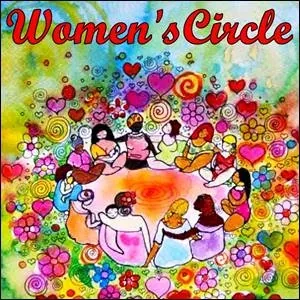
 - ### WE ARE AN- EMOTIONAL HEALING PROCESSDOJO FOR OURSELVES AND FOR OTHERS IN NEXT CULTURE.- http://ehpdojo.mystrikingly.com- Also: online global Telegram EHP Collaboration Group - (link to join Telegram Group: - http://t.me/joinchat/WC5Px3vhJLpGU-Cz)
- ### WE ARE AN- EMOTIONAL HEALING PROCESSDOJO FOR OURSELVES AND FOR OTHERS IN NEXT CULTURE.- http://ehpdojo.mystrikingly.com- Also: online global Telegram EHP Collaboration Group - (link to join Telegram Group: - http://t.me/joinchat/WC5Px3vhJLpGU-Cz) - ### OUR- PATHOF ADULTHOOD IS A SERIES OF BIRTHING PROCESSES THROUGH THE- 8 PRISONS: MOTHER'S BELLY, FATHER'S CONTROL, PARENT'S HOUSEHOLD,- SCHOOL,- RELIGIOUS BELIEFS,- NATIONAL IDENTITY,- PATRIARCHY, AND THE- LINEAR LIFE PLAN. WE CANNOT JACK-IN TO OUR- ARCHETYPAL LINEAGEWITHOUT EACH OTHER'S HELP.
- ### OUR- PATHOF ADULTHOOD IS A SERIES OF BIRTHING PROCESSES THROUGH THE- 8 PRISONS: MOTHER'S BELLY, FATHER'S CONTROL, PARENT'S HOUSEHOLD,- SCHOOL,- RELIGIOUS BELIEFS,- NATIONAL IDENTITY,- PATRIARCHY, AND THE- LINEAR LIFE PLAN. WE CANNOT JACK-IN TO OUR- ARCHETYPAL LINEAGEWITHOUT EACH OTHER'S HELP.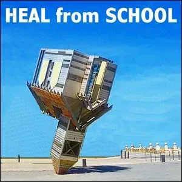
- ### NEXT CULTURE - ARCHEARCHY - REQUIRES AN ENTIRELY DIFFERENT KIND OF SCHOOLING THAN THE MODERN- CAPITALIST PATRIARCHAL EMPIRE. WE DO NOT HAVE TO- KNOWHOW IT GOES. WE ONLY HAVE TO- HEAL FROM SCHOOLAND RIDE THE- DRAGONOF INVENTION.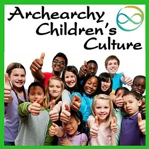
- ### WE CO-CREATE- ARCHEARCHY CHILDREN'S CULTURE (archived — not captured)THAT REPLACES 'SCHOOL' AND PROVIDES CHILDREN AND YOUTH WITH THOUGHTWARE UPGRADES TO PREPARE FOR THEIR 21st CENTURY AUTHENTIC ADULTHOOD- INITIATORY- PROCESSES. - ### WE CREATE ABUNDANT- VALUEBY PROVIDING ONLINE AND OFFLINE- HEALINGAND- EMPOWERMENTSERVICES SUCH AS- RAGE CLUB,- FEAR CLUB,- WORKTALKS,- WORKSHOPS, AND- POSSIBILITY COACHING.
- ### WE CREATE ABUNDANT- VALUEBY PROVIDING ONLINE AND OFFLINE- HEALINGAND- EMPOWERMENTSERVICES SUCH AS- RAGE CLUB,- FEAR CLUB,- WORKTALKS,- WORKSHOPS, AND- POSSIBILITY COACHING. - ### SINGLE MOMS BRIDGE-HOUSE IS AN EVOLUTION-POWERED- GAIAN GAMEWORLD.
- ### SINGLE MOMS BRIDGE-HOUSE IS AN EVOLUTION-POWERED- GAIAN GAMEWORLD. - ### WE ARE A- CIRCLEOF- POSSIBILITATORSUSING- TORUS TECHNOLOGYTO- NAVIGATE SPACESOF- CULTURE-TO-CULTURECONVERSATIONS.
- ### WE ARE A- CIRCLEOF- POSSIBILITATORSUSING- TORUS TECHNOLOGYTO- NAVIGATE SPACESOF- CULTURE-TO-CULTURECONVERSATIONS.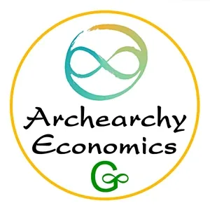
- ### WE COLLABORATIVELY THRIVE EXCHANGING- NONMATERIAL VALUEIN- ARCHEARCHY ECONOMICS (archived — not captured). IT IS A BREAKTHROUGH EXPERIENCE.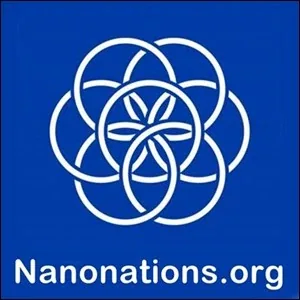
- ### WE- DECLAREOURSELVES TO BE A- NANONATIONIN THE UNITED GLOBAL NETWORK OF NANONATIONS (UGNN). - ### OUR- CONTEXTIS CENTERED ON- RADICAL RESPONSIBILITYAND AUTHENTIC ADULTHOOD- HEALINGAND- INITIATORY- PROCESSES.
- ### OUR- CONTEXTIS CENTERED ON- RADICAL RESPONSIBILITYAND AUTHENTIC ADULTHOOD- HEALINGAND- INITIATORY- PROCESSES.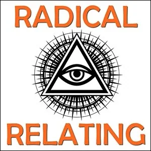
- ### WE- RADICALLY RELYON OUR- BRIGHT PRINCIPLES, AND USE- RADICAL SIMPLICITYIN OUR- RADICAL RELATING.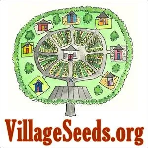
- ### WE ARE AN- ARCHEARCHY VILLAGEEMPOWERING EACH OTHER TO BUILD MORE- SINGLE MOMS BRIDGE-HOUSES. - ### WE SOMETIMES USE RECIPES FROM OUR SISTER NANONATION- POSSIBILICA.
- ### WE SOMETIMES USE RECIPES FROM OUR SISTER NANONATION- POSSIBILICA. - ### OUR ADULTHOOD- EDGEWORKERCULTURE ORIGINATES IN- GREMLINTRANSFORMATION.
- ### OUR ADULTHOOD- EDGEWORKERCULTURE ORIGINATES IN- GREMLINTRANSFORMATION. - ### WE EXPORT INITIATED- ADULT EGO STATESTHAT ARE- DECONTAMINATED (archived — not captured)FROM THE- CHILD EGO STATE, THE- PARENT EGO STATE, THE- GREMLIN EGO STATE, AND THE- DEMON EGO STATE.
- ### WE EXPORT INITIATED- ADULT EGO STATESTHAT ARE- DECONTAMINATED (archived — not captured)FROM THE- CHILD EGO STATE, THE- PARENT EGO STATE, THE- GREMLIN EGO STATE, AND THE- DEMON EGO STATE.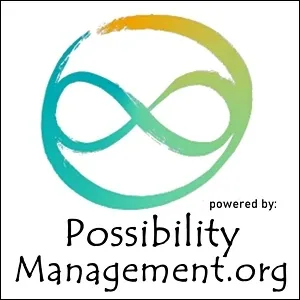
- ### WE- INVENTOUR- CONTEXTWITH THE- TOOLS,- DISTINCTIONS,- THOUGHTMAPS, AND- PROCESSESOF- POSSIBILITY MANAGEMENT:- THOUGHTWAREFOR NEXT CULTURE -- ARCHEARCHY (archived — not captured).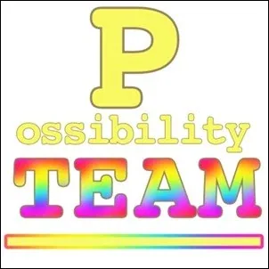
- ### WE MEET WEEKLY IN OUR OWN- POSSIBILITY TEAMTO SUPPORT EACH OTHER AND OUR- PROJECTON THE EVOLUTIONARY PATH: EVOLUTIONARY- GAMEWORLDSMUST ALSO EVOLVE !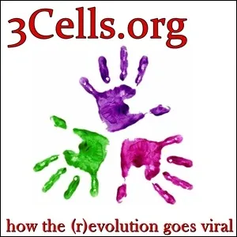
- EVOLUTION THRIVES IN OUR 3Cells WHERE WE CONFIDE OUR DEEPEST FEARS AND SECRETS AND, AND CAN GIVE AND RECEIVE CONFIDENTIAL SUPPORT THAT TRULY NURTURES US AS TRANSFORMATIONAL WOMEN IN ARCHEARCHY.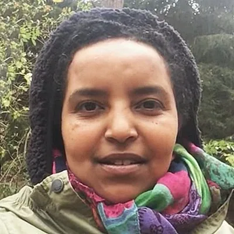
- Spaceholder: - Habet Dahab Ogbamichael - I have been a mom for both children and projects. Being Spaceholder for Single Moms Bridge-House is a natural emergence... a word that sounds similar to the word: emergency. Sometimes I feel this way. - In stepping across the bridge from the - capitalist patriarchal empireover towards- archearchy (archived — not captured), women may be ahead of the men. There are so many illusions for a human being to lose on the- Pathof leaving the patriarchy, and truth be told, so much to win.- I have been using - Possibility Managementtools and- thoughtmapsfor some years. It has changed my life. I love it.- In terms of creating this - Single Moms Bridge-House, what I think is that we don't need to know exactly how it goes before we start. We just need to ride this- dragontogether. - Single Moms Bridge-House Culture- #### Each domain serves us as a training framework with a spaceholder, two apprentices, and the entire Bridge-House Team.These qualities and activities all fit together into our unique and constantly evolving- Single Moms Bridge-Houseculture.An evolving gameworld must also evolve...1- WOMEN'S CULTURE- We take care of ourselves and each other through deepening our archearchy (archived — not captured)context and the daily practices ofWomen's Circle. - SPACEHOLDER: - APPRENTICE 1: - APPRENTICE 2: 2- CHILDREN'S CULTURE- We develop the contextandpracticesofArchearchy Children's Culture (archived — not captured). - SPACEHOLDER: - APPRENTICE 1: - APPRENTICE 2: 3- RELATIONSHIP AND LIFE SKILLS DEVELOPMENT- We use Possibility Managementvastresourcesoftools,thoughtmaps,distinctions,processes, and growing community ofpractitionerstoupgradeourcommunication and relationshipskills, and tohealandtransformwounds from our childhood exposure to modern culture'scapitalist patriarchal empire. - SPACEHOLDER: - APPRENTICE 1: - APPRENTICE 2: 4- ONLINE RAGE CLUB, FEAR CLUB, TALKS, WORKSHOPS, AND POSSIBILITY COACHING- We collaborate our schedules and skills to provide these valuable services both online and offline to bring in enough income to pay for food, rent, utilities and Artabana fees. - SPACEHOLDER: - APPRENTICE 1: - APPRENTICE 2: 5- OUR WEEKLY POSSIBILITY TEAM- We rotate Spaceholders to care for our children while developing our Spaceholding skills during our weekly Bridge-House Possibility Teamfor check-in, skill-building, and personal development. - SPACEHOLDER: - APPRENTICE 1: - APPRENTICE 2: 6- NAVIGATING DAILY LIFE TOGETHER- collaborative Archearchy Children's Culture (archived — not captured)care - collaborative Nonmaterial Valueincome generation - collaborative Archearchy Economics (archived — not captured) - cooking and cleanup - caring for household: cleaning toilets, bathrooms, entryway, etc. - replacing toilet paper - doing laundry, schedule and procedures - shopping list, shopping schedule - daily and weekly schedule of meetings, spaceholders, meals, etc. - SPACEHOLDER: - APPRENTICE 1: - APPRENTICE 2: 7- CARING FOR OUR PERMACULTURE GARDENS- We collaboratively garden, harvest, prepare, preserve, and store the vegetables and fruit from our gardens. - We prune and care for our trees. - SPACEHOLDER: - APPRENTICE 1: - APPRENTICE 2: - BUDGET: 8- VEGETARIAN AND VEGAN COOKING AND WEEKLY BREAD-BAKING- SPACEHOLDER: - APPRENTICE 1: - APPRENTICE 2: - BUDGET: 9- COMPOSTING, RECYCLING, TRASH- We continue to Radically Simplify our energetic and material lives. - We compost and recycle. - We re-use clothing and tools. - SPACEHOLDER: - APPRENTICE 1: - APPRENTICE 2: 10- OUR 4 ARCHETYPAL LINEAGES- In an ongoing Metaconversationwith a parallelPurpose, we strive to distinguish and respectfully interact with each person'sArchetypal Lineage. - We regularly meet in our individual Archetypal Lineage Groupsto empower our knacks and to collaborate and serve our Village with our talents: - SPACEHOLDER: - APPRENTICE 1: - APPRENTICE 2: - We take care of ourselves and each other through deepening our - Updates From Single Moms Bridge-House- from time to time we will post an update here - 1 December 2021- This Project has begun. We are just coming together. The Purpose of - Single Moms Bridge-Houseis:- to support each otherto gain enoughClarityandDo It Powerto create more Single Mom Bridge-Houses. - to thrive in a CircularTeamof Single MomPossibilitators. - to Practiceand live for a certain amount of time various aspects ofPossibility Managementin aBridge-House. - to gap the Bridgeover the unknown from thepresentcapitalisticpatriarchalthoughtware to next culture -archearchy (archived — not captured). - to use Possibility Coachingto empower each other withEmotional Healing Processes(EHP). - to support the evolution of Consciousnessof beings on Earth. - to experience how this SpaceisTransformsandIntegratesdifferentpersonalities. - to sidestep Reactivepatterns so that shiningBeingscan emerge. - If You want to experience this energetic field Yourself, please get in touch with Habet Ogbamichael using the contact form below. - to support - Bridge-House Resources- We are happy to share our resources - it is the kind of Treasure that grows by giving it away. - Everything we create here is copyleft open-code thoughtware: It cannot be copyrighted.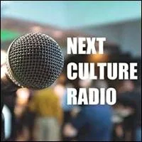

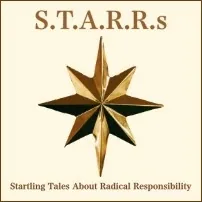


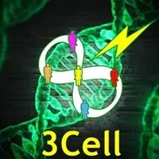

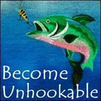


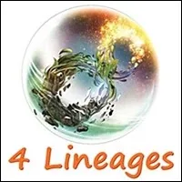

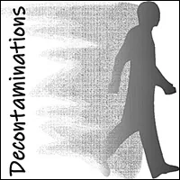
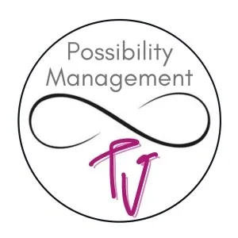

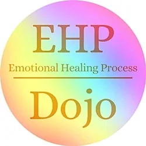
- Contact Us- SINGLE MOMS BRIDGE-HOUSEINQUIRY FORM - The opposite of scarcity is not abundance.- The opposite of scarcity is creating.- - Clinton Callahan - NOTE:This website is a- Bubble in the Bubble Map- StartOver.xyz- doorway- experiments- upgrade your thoughtware- point of origin- create- possibility- knowledge- about. Your- thoughtware- with. When you- change your thoughtware- liquid state- reorganizes- feelings- emotions- upgrading your thoughtware- build matrix- consciousness (archived — not captured)- low drama- reactivity- collectively build- responsibly- SIMOMSBH.00to log your Matrix Point for reading this website on- StartOver.xyz